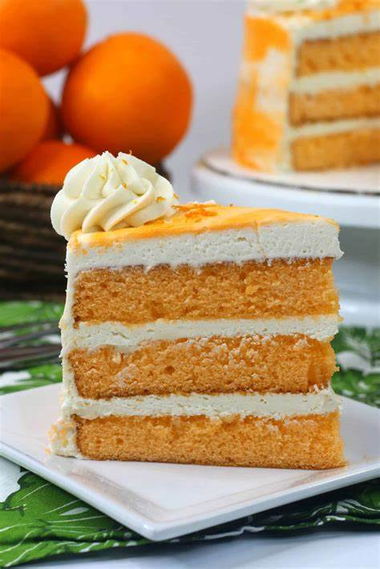

1. Hoogwaardige Ingrediënten: We geloven in het gebruik van alleen de allerbeste ingrediënten. Onze cake begint met de fijnste bloem, verse eieren, pure vanille-extract en andere hoogwaardige componenten. Dit resulteert in een cake van de hoogste kwaliteit.
2. Variëteit aan Smaken: We bieden een breed scala aan smaken en variaties van cake. Of je nu van traditionele vanillecake, decadente chocoladecake, fruitige citroencake of andere smaken houdt, we hebben voor elk wat wils.
3. Handgemaakt Vakmanschap: Onze cakes worden met de hand gemaakt door ervaren bakkers met passie voor hun vak. Elk beslag wordt zorgvuldig gemengd, in de perfecte vorm gegoten en gebakken om een luchtige, vochtige en smaakvolle cake te garanderen.
4. Aandacht voor Detail: We besteden speciale aandacht aan de details. Onze cakes worden prachtig gedecoreerd en met zorg gepresenteerd, zodat ze er net zo goed uitzien als ze smaken.
5. Seizoensgebonden Creativiteit: We bieden seizoensgebonden cakecreaties die passen bij de tijd van het jaar. Of het nu gaat om speciale vakantiecake, lente-achtige smaken of herfstige kruidencake, we brengen de smaken van elk seizoen tot leven.
6. Kwaliteitscontrole: Elke cake wordt grondig gecontroleerd om ervoor te zorgen dat deze aan onze strenge kwaliteitsnormen voldoet. We willen alleen het beste aan onze klanten leveren.
7. Klanttevredenheid: Het belangrijkste is dat onze klanten van onze cake genieten. Hun tevredenheid en herhaalde aankopen zijn de grootste beloning voor onze inspanningen.
